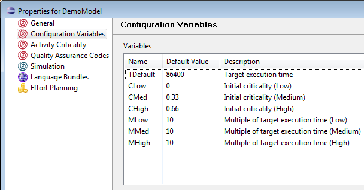
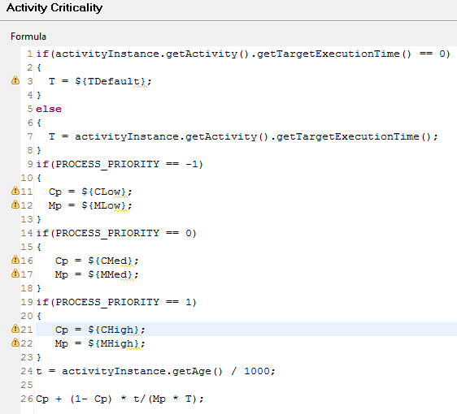
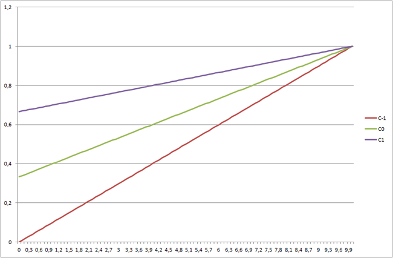
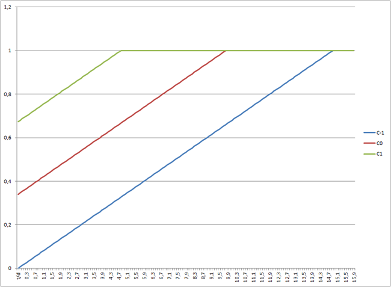

Real-life production installations of BPM systems typically handle many thousands of process and activity instances per day. The processing order of all these instances should always be optimized with regard to leveraging the company workforce most efficiently and ensuring that processing time requirements such as service level agreements (SLAs) are met. This implies that all interactive activity instances need to be presented and processed in the order of their overall relevance for supporting the most important and most urgent business processes. Importance and urgency will usually depend on many parameters such as for example:
Time dependency is one of the most important and at the same time most challenging factors when determining which process and activity instances deserve the biggest attention. For example an approaching SLA deadline may dramatically increase the importance of a certain activity or process instance, as missing SLA deadlines may result in impaired customer relationships, lost money and many other issues.
In order to handle these potential issues before they become critical, it will be required to optimize the processing order of activity instances dynamically as a function of time. Stardust provides the concept of Activity Criticality to address this requirement. Activity Criticality is a numerical measure for the overall urgency of an activity. Formulas can be specified to model how this criticality value changes over time as a function of the parameters listed above. Once these formulas are specified, Stardust will recalculate the activity criticality periodically and present interactive work items to the users in the order of criticality.
The relevance and urgency of work can be determined for process instances or for the individual activities that need to be completed in order to perform a business process. The urgency of process instances is determined via its priority. The priority can take three values (low, medium high). The priority value for any given process instance is not inherently time dependent and only changes in response to discrete processing events or human interaction with the system. Activity instances, on the other hand are continuously re-prioritized via their criticality value. The process engine automatically recalculates the criticality of activity instances as a function of time, process priority, business data and potentially other parameters.
The following table gives an overview of the differences between the process priority and activity criticality:
| Classic Priority | Criticality |
|---|---|
| Per process instance | Per activity instance |
| Value range [-1,0,1] | Float value in interval [0; 1] |
| Static, no automatic aging | Automatic aging (Daemon, JavaScript calculation formula) |
| User modifiable. | Read only for users. Administrator can configure the formula (in modeler or portal). |
| Labels are configurable for portal. | Configurable value intervals, labels, icons in portal. |
Usage:
|
Usage:
|
Calculation of criticality is performed in the following cases:
You can add arbitrary JavaScript statements to be executed sequentially when calculating the criticality in order to evaluate and assign parameter values as a function of activity or process properties, workflow data, etc. The return value of the last statement specified in the JavaScript editor is assigned to the criticality of the activity instance.
You can also use any configuration variable defined for the model as described in chapter Using Configuration Variables in the Modeling Guide in any place of the criticality formula.
A standard formula is created during initial creation of the model. Configuration variables used in the formula are created automatically with default values when creating a new model.
The calculation of criticality is done by a JavaScript code fragment. The JavaScript formula is able to use:
activityInstance.getActivity().getTargetExecutionTime()
activityInstance.getStartTime()
If no JavaScript formula is found in the model that the current activity instance belongs to, a default formula is used.
The standard formula is a linear function using the following parameters and variables:
| Variable / Parameter | Description |
|---|---|
| t | Time in seconds passed since the creation of an activity instance. Independent variable that the criticality depends on. |
| T | Target execution time, which can be a fixed parameter or set as controlling property in the modeler. It also can be a default value used if the target execution time is not used or not set. |
| P | Priority of the corresponding process instance. |
| Mp | Multiple of target execution time after which the activity should age no further, depending on the process priority. |
| Cp | Initial criticality that an activity instance is created with, depending on the process priority. |
The standard formula can be changed:
The following configuration variables to be used in the standard formula are created with according default values when creating a new model:
| Variable Name | Default Value | Description |
|---|---|---|
| CLow | 0 | Initial criticality (Low) |
| CMed | 0.33 | Initial criticality (Medium) |
| CHigh | 0.66 | Initial criticality (High) |
| MLow | 10 | Multiple of target execution time (Low) |
| MMed | 10 | Multiple of target execution time (Medium) |
| MHigh | 10 | Multiple of target execution time (High) |
| TDefault | 86400 (number of seconds in 3 days) | Value for target execution time to be used for activity instances where this controlling parameter is not set. |
You can see these configuration variable in the model property page Configuration Variables section.

The standard formula for Criticality C as a function of t uses these parameters in the following way:
C(t) = Cp + (1- Cp) * t/(Mp * T)
The following code is used in the standard JavaScript to determine the variables needed for the formula:
if(activityInstance.getActivity().getTargetExecutionTime() == 0)
{
T = ${TDefault};
}
else
{
T = activityInstance.getActivity().getTargetExecutionTime();
}
if(PROCESS_PRIORITY == -1)
{
Cp = ${CLow};
Mp = ${MLow};
}
if(PROCESS_PRIORITY == 0)
{
Cp = ${CMed};
Mp = ${MLow};
}
if(PROCESS_PRIORITY == 1)
{
Cp = ${CHigh};
Mp = ${MHigh};
}
t = activityInstance.getAge() / 1000;
The standard formula using default values set during model creation then looks like the following in the model property page Formula field:

The following examples illustrate using different parameterizations of the standard formula, whereby the x-axis shows t in multiples of T .


The first variant shown above corresponds to the default parameterization that is used, whereas the second shows an alternative that would more aggressively age activity instance with higher priorities.
Upon activity creation, the initial activity criticality value is calculated using the JavaScript formula for the model containing the current activity and the algorithm described in the previous sections.
Activity criticality is recalculated and stored analogously whenever the priority is changed for the process instance containing the current activity. The following methods to change process priority result in reevaluation of dependent activity criticalities:
Activity criticality is recalculated whenever any of the following suspend() -methods is called:
Using the Stardust API allows you to controll the recalculation behavior of activity criticality. For details refer to chapter Querying and Recalculating Activity Criticality. That chapter additionally describes how to retrieve criticality of an activity instance, query for criticality and the recalculation process.
A prioritization daemon exists to handle criticality recalculation and other functionality in the area of dynamical workload prioritization, like:
Refer to chapter Daemons for details on this daemon.
The Assembly line provider CriticalityAwareAssemblyLineActivityProvider introduced for criticality is able to use full precision of Double value for determining the most critical activity. To order worklists, the Assembly line provider uses the following criteria in the order:
To use the assembly line provider for criticality, set the assembly line provider property in your carnot.properties file to the criticality provider:
Carnot.ProcessPortal.AssemblyLineActivityProvider=
org.eclipse.stardust.ui.web.processportal.common.CriticalityAwareAssemblyLineActivityProvider
Refer to chapter Implementing an Assembly Line Activity Provider in the Programming Guide for details on how to implement the default assembly line provider in general.
The Stardust portals visualize criticality as colored flags to describe Integer values between 0 and 1000 . Criticality is displayed in all activity tables.
The Criticality Configuration View provides the option to:
For details refer to chapter Configuring Criticality Settings of the End User Handbook.
The result returned by the JavaScript criticality formula is assigned to the activity instance criticality as floating point number in the interval [0;1] .
Incorrect result values are handled in the following way: